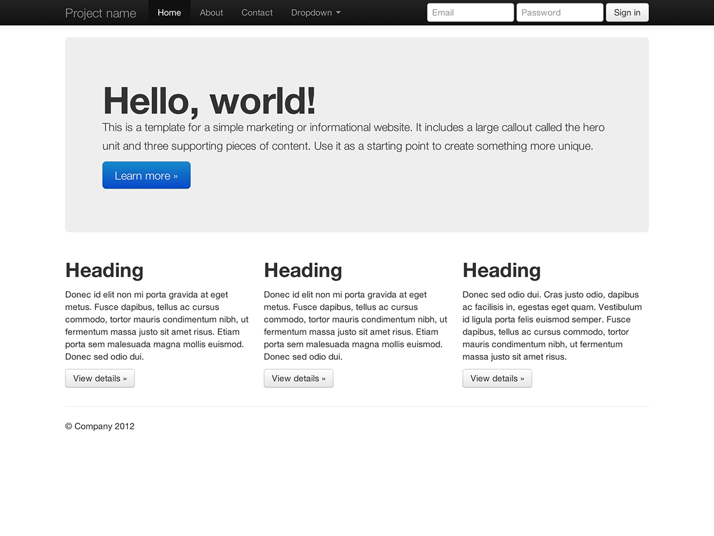
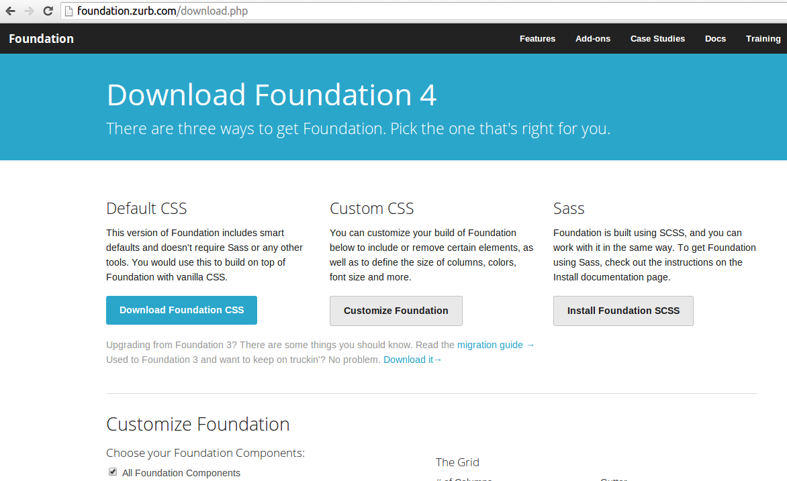
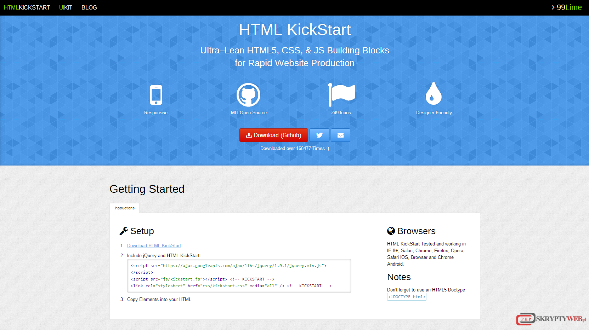
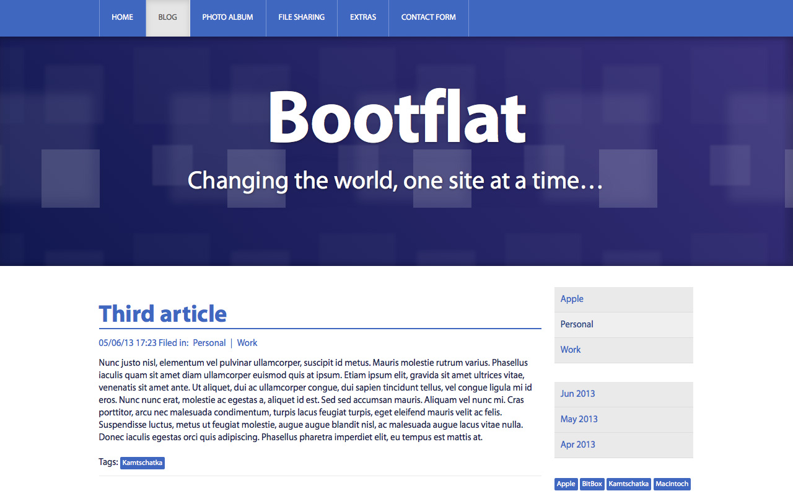
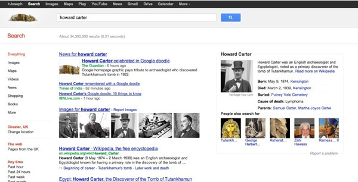

Modern Web Pages
What are we using everyday?
Presentation Plan
- Dictionary
- All the technology behind.
- Web Consortium
- Web accessibility.
- Try to look nice!
- Not only news.
- Describe your self.
- Be first
Dictionary
- Maszyna wirtualna - virtual machine
- Semantyczny - semantic
- Znacznik - tag
- Pętla - loop
- Składnia - syntax
Starter
“For years there has been a theory that millions of monkeys typing at random on millions of typewriters would reproduce the entire works of Shakespeare. The Internet has proven this theory to be untrue.”
All the technology behind.
A lot of it!
-
Client side:
- HTML
- CSS
- JS
- AJAX
- DOM
- ...
-
Server side:
- Java
- Scala
- Ruby
- PHP
- Python
- ...
Web Consortium
Defining standards
385 members
Standards:
- XML
- HTML
- CSS
- JavaScript Web API
- PNG
- SVG
- Accessibility
Members
Web accessibility.
WCAG 2.0 - Web Content Accessibility Guidelines
Web Accessibility Initiative
Try to look nice!
A lot of ready to use frameworks!
- Bootstrap
- Foundation
- HTML KickStart
- Bootflat
Bootstrap
Foundation
HTML KickStart
Bootflat
Not only news.
Single Page Applications - SPA
No need to wait till page is loaded
Fell like using standalone computer application
Offline also!
Describe your self.
Semantic web.
- Business cars
- Recipes
- Reviews
- Time tables
Google search example
Be first
SEO - Search Engine Optimization